Mid-century modern never really left, which makes "trends" an odd word to apply to it.
But the way it's being done in 2026 is genuinely different from how it was done five years ago, bolder color, curvier furniture, a looser attitude toward perfection.
This covers what's actually new, not the timeless basics covered elsewhere.
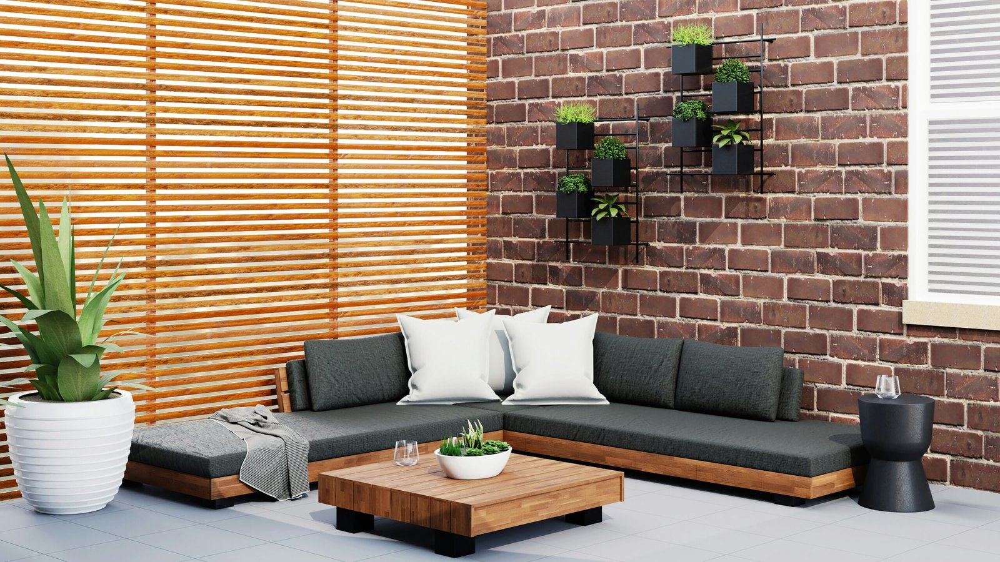


Imperfection as a Feature
A slightly worn vintage find or an intentionally asymmetrical arrangement is now treated as more desirable than a flawlessly matched room.
This "lived-in" philosophy is arguably the biggest mindset shift behind all of 2026's more specific trends.
Vintage and Modern, Deliberately Blended
The 2026 signature look leans into an obvious mix of genuinely old pieces alongside new ones, rather than an all-vintage or all-reproduction room.
This visible blend is treated as the point, not something to disguise.
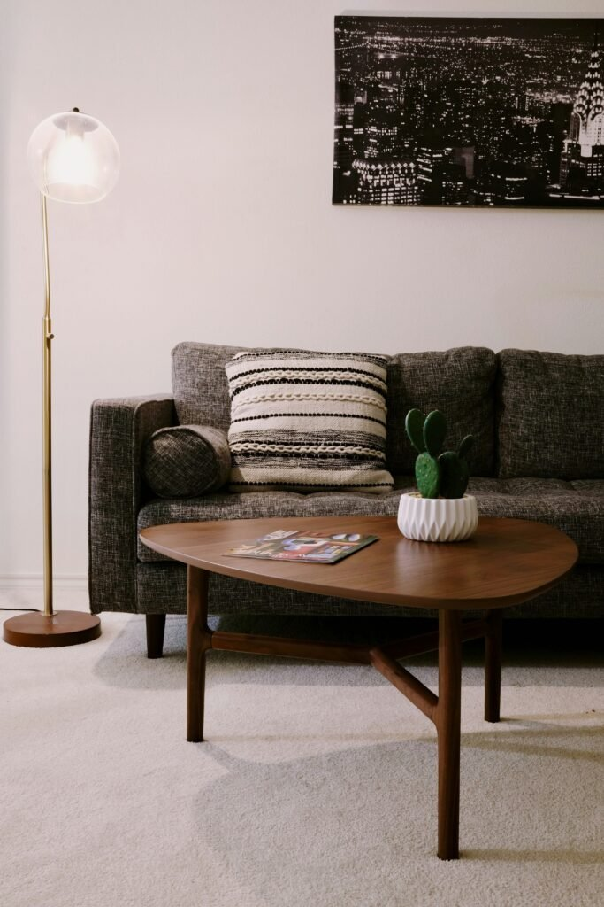
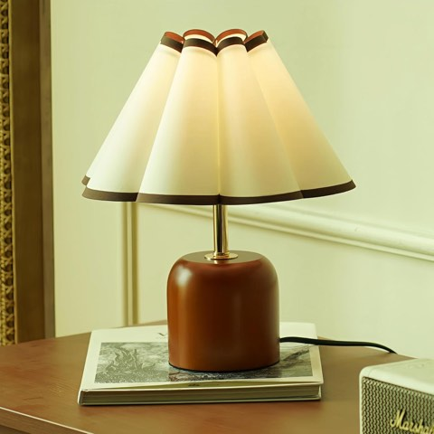
Cute Small Table Lamp, Vintage Mid Century Modern Bedside Lamp with Fabric Shade
Shop on AmazonOversized Art, Not Small Collections
One large, confident piece of art is edging out the smaller curated collections that defined mid-century styling a few years back.
This mirrors the furniture shift toward fewer, bolder choices over many smaller ones.

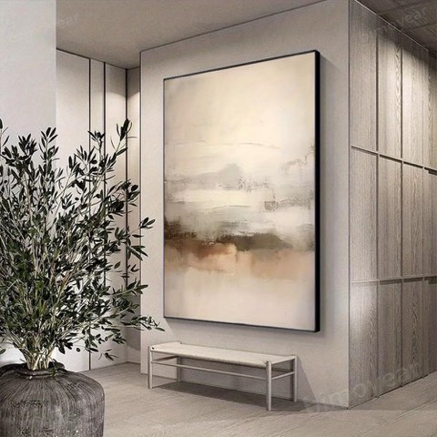
Large Oversize Abstract Neutral Framed Wall Art for Living Room and Bedroom
Shop on Amazon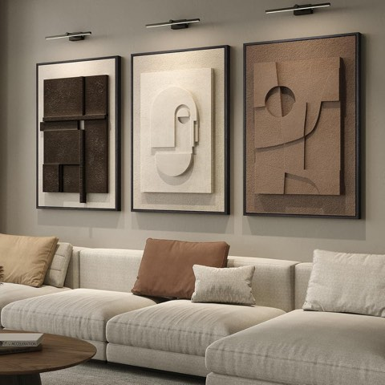
3D Large Framed Brown Abstract Wall Art for Living Room, 3 Piece, 24 x 36 Inch
Shop on AmazonSculptural Lighting as the New Statement Piece
A sculptural floor or pendant lamp is increasingly doing the job a piece of art used to do, the room's main visual anchor.
This reflects lighting's broader shift from purely functional to genuinely decorative across the whole style.
The Conversation Circle Layout
Furniture arranged to genuinely face each other, rather than all pointed at a screen, is having a real resurgence as homes prioritize in-person connection again.
This layout choice is as much a 2026 statement as any specific piece of furniture.


Mid-Century Meets Minimalism
A more edited, negative-space-forward version of the style is showing up alongside the bolder color shift, fewer pieces, each one more deliberately chosen.
This pairing might seem contradictory to the bolder palette trend, but the two actually work together: bold color, restrained quantity.


Curved Furniture Over Straight Lines
A curved sofa or an organically shaped chair is the single most visible 2026 shift away from mid-century's traditionally straight, angular silhouettes.
This softer furniture language pairs the style with a more current, slightly maximalist sensibility rather than the stricter mid-century of past decades.

The Color Shift: Bolder Than Before
The 2026 version pushes past safe earthy neutrals into deeper jewel accents, a moody emerald or burnt amber used deliberately, not just as a tiny accessory.
Warm woods are also winning out decisively over the cooler metal finishes that dominated a few years ago.
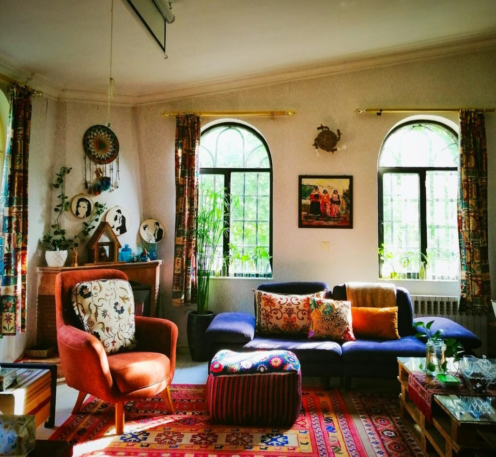
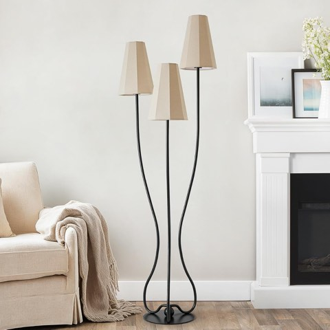
ZenGlimmer Artistic Vintage Floor Lamp, 3-Light Sculptural Curved Iron Base
Shop on Amazon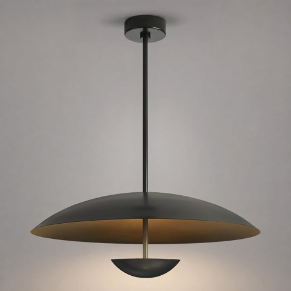
24 Inch Black Pendant Light, Sculptural LED Fixture for Large Dining Tables
Shop on Amazon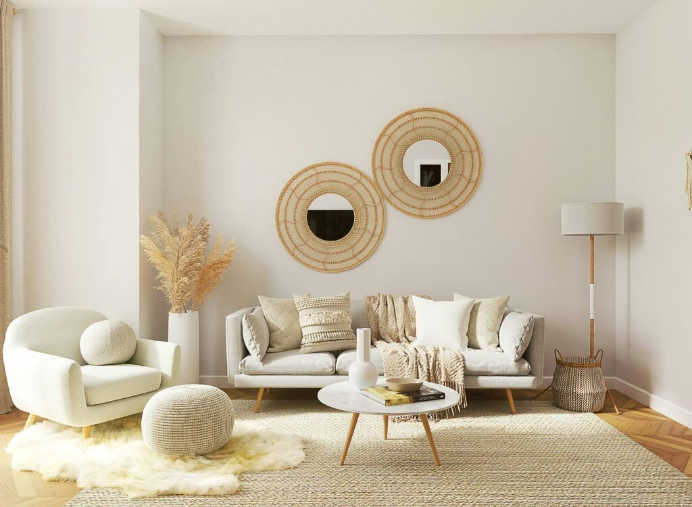
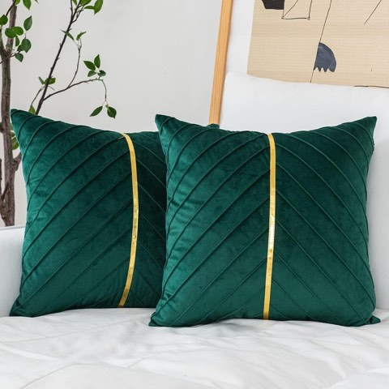
WACOMECO Velvet Throw Pillow Covers, Pack of 2, Emerald with Gold Stripe
Shop on AmazonWhy It Keeps Resurfacing
Mid-century's clean lines and warm materials photograph well and age well at the same time, which is a rare combination most other trends don't manage simultaneously.
What's changed for 2026 isn't the foundation, it's the confidence with which people are now willing to push past the safe, neutral version of the style.

Cute Small Table Lamp, Vintage Mid Century Modern Bedside Lamp with Fabric Shade
Shop on AmazonCOVLON Solid Wood Round Side Table, U-Shaped Base, Space-Saving
Shop on Amazon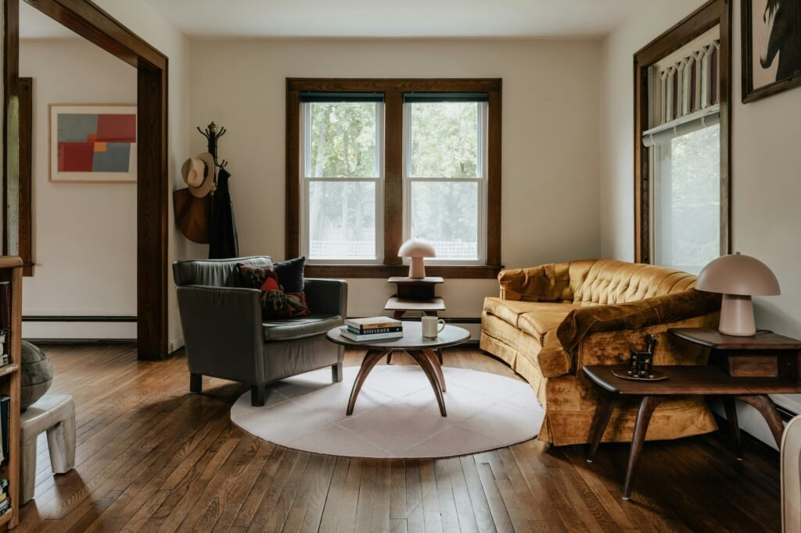


Your 2026 Moodboard
None of this actually requires abandoning mid-century's real fundamentals, clean lines, warm materials, function-first design.
What's genuinely different in 2026 is the confidence to push color further, curve the furniture, and let the room look lived in rather than showroom-perfect.